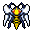
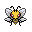

Pokédex / #015

Beedrill #015
BugPoison
May appear in a swarm. Flies at violent speeds, all the while stabbing with the toxic stinger on its rear.
Generation 1 · Kanto

Stats
| Attack | 90 | |
|---|---|---|
| Defense | 40 | |
| Sp. Atk | 45 | |
| Sp. Def | 80 |
In the wild
| Wild level | 25–35 |
|---|---|
| HP | 65 |
| Experience | 12 |
| Egg groups | Bug |
Evolution
- Evolves from Kakuna at level 25.
Moves
| Level | Move | Type | Category | Power | Energy | Cooldown | Effect | |
|---|---|---|---|---|---|---|---|---|
| 1 | Tackle | Normal | Physical | 15 | 15 | 1s | Tackle is one of the most common and basic moves a Pokemon learns. It deals damage with no additional effects. | |
| 5 | Bug Bite | Bug | Physical | 60 | 60 | 5s | Bug Bite deals damage and has no secondary effect. | |
| 10 | String Shot | Normal | Status | 1 | 15 | 8s | String Shot lowers the target's Speed by one stage. | |
| 15 | Fury Attack | Normal | Physical | 15 | 45 | 9s | Fury Attack does damage, hitting 2-5 times per use. | |
| 20 | Twineedle | Bug | Physical | 25 | 55 | 8s | Twineedle deals damage and will strike twice (with 25 base power each time). It has a 20% chance of poisoning the target, except for Poison or Steel types which cannot be poisoned. | |
| 25 | Poison Jab | Poison | Physical | 80 | 80 | 12s | Poison Jab inflicts damage and has a 30% chance of poisoning the target. | |
| 30 | Roost | Flying | Status | – | 90 | 120s | User recovers half of its max HP. Flying types temporarily lose Ground type immunity. | |
| 35 | Pin Missile | Bug | Physical | 25 | 60 | 9s | Pin Missile inflicts damage, hitting the target between 2-5 times per use. | |
| 40 | Toxic Spikes | Poison | Status | 10 | 70 | 8s | Toxic Spikes deals damage and inflicts Poison, if the target already is Poisoned then inflicits Badly Poison. | |
| 45 | Harden | Normal | Status | – | 70 | 60s | Harden raises the user's Defense by one stage. | |
| 50 | Assurance | Dark | Physical | 60 | 70 | 13s | Assurance does damage and has no secondary effect. | |
| 55 | Aerial Ace | Flying | Physical | 60 | 60 | 14s | Aerial Ace deals damage and ignores changes to the Accuracy and Evasion stats. | |
| 60 | Agility | Normal | Status | – | 80 | 20s | Agility raises the user's Speed by two stages. | |
| 65 | X-Scissor | Bug | Physical | 80 | 90 | 18s | X-Scissor deals damage and has no secondary effect. | |
| 70 | Endeavor | Normal | Physical | 100 | 90 | 15s | Endeavor deals damage and has no secondary effect. | |
| 75 | Focus Energy | Normal | Status | – | 70 | 60s | Increases Critical-Hit ratio by 50%. |
Field abilities
FindCut
Special abilities
Swarm
Egg moves
None
Technical machines
Aerial AceBideBrick BreakDouble EdgeDouble TeamFury CutterHyper BeamMega DrainMimicPoison JabRageReflectRestSkull BashSludge BombSoftboiledSubstituteSwiftSwords DanceTake DownToxic
Drops
| Item | Amount | Chance | |
|---|---|---|---|
| pot of moss mug | 1–3 | 62.5% | |
| sample of sand wasp honey | 1 | 43.8% | |
| insect skin | 1 | 8.33% | |
| red apple | 1–3 | 3% | |
| orange | 1–3 | 3% | |
 | beedrill doll | 1 | 0.1% |
| Insect Plate | 1 | 0.05% | |
| Toxic Plate | 1 | 0.05% | |
| TM 19 | 1 | 0.01% | |
| held poison barb | 1 | 0.01% | |
| held silver powder | 1 | 0.01% |